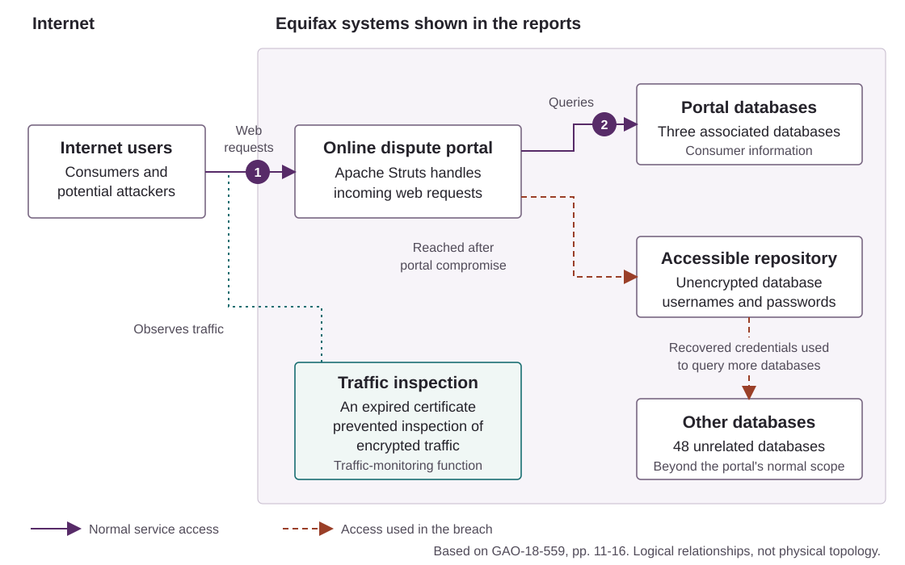

Requirements
- A browser and your System Security lecture notes.
- Paper or a document for short answers and diagrams.
There is no software to install or run. The relevant case findings are summarised below, with links to the original sources. Read the short Apache advisory in Part 2; you do not need to read the full incident reports during the class.
Work individually or in pairs. Allow five minutes to get started, 25 minutes for Part 1, 20 for Part 2, 30 for Part 3 and 35 for Part 4. Use the final five minutes to choose a case for Further Research.
1. System and assets
About 25 minutes
The incident
Equifax is a credit reporting company. Its online dispute portal allowed people to challenge inaccurate information in their credit reports and upload supporting documents. A compromise therefore threatened information used in decisions about real people's finances. The FTC's 2019 account reports the theft of approximately 147 million names and dates of birth, alongside other personal information. [1]
The diagram shows the components relevant to this practical. It is a simplified logical view drawn from the published investigation, not Equifax's actual network layout. Solid lines show ordinary service access; dashed lines show access used after the portal was compromised. Response paths are omitted. [2, pp. 11-16]

Start with the assets
An asset is something whose loss, disclosure, alteration or unavailability would matter. A database server is a component; the personal information it holds is an asset. Components and services can also be assets when their correct operation matters. Avoid using "security" as the property: say what must remain confidential, accurate or available, and to whom.
| Asset | Who relies on it? | Required property | Consequence of failure |
|---|---|---|---|
| Consumer personal information | People whose records Equifax holds | Confidentiality: only authorised parties can retrieve it | Exposure can enable identity theft and cause loss of privacy |
| Database credentials | Complete | Complete | Complete |
| Dispute portal service | Complete | Complete | Complete |
| Application code and configuration | Complete | Complete | Complete |
| Your choice of another asset | Complete | Complete | Complete |
Exercise: assets, trust and access
- Complete the table. For one asset, explain why more than one security property matters.
- At points 1 and 2 in the diagram, identify the subject making a request, the resource it wants and the decision that should be enforced. Explain why a request originating inside the organisation is not automatically trustworthy.
- Take the goal "consumer records are disclosed only to authorised parties". Identify three components or mechanisms you must rely on to enforce it. Give one assumption about the system that the reported breach shows was unsafe.
Use the lecture's reference-monitor idea when considering point 2: every relevant access needs a check, and a compromised application should not acquire unrestricted access to unrelated records. The diagram's outer box is an organisational boundary, not evidence that everything inside it was properly isolated.
2. Understand the CVE
About 20 minutes
The entry point was CVE-2017-5638, a vulnerability in Apache Struts 2, a framework used to build Java web applications. A CVE identifier names a particular disclosed vulnerability. It does not establish that every installation of that product is affected or that a particular system has been compromised.
Read Apache's S2-045 advisory, especially its summary, affected software, problem and solution. It concerns the Jakarta multipart parser, which handles certain file-upload requests. A malicious Content-Type header could trigger remote code execution through its error handling. Remote code execution means that an attacker can cause code to run on another computer; the authority available to that code still matters. [3]
Advisory facts
Apache lists Struts 2.3.5-2.3.31 and 2.5-2.5.10 as affected. Its historical fixes were 2.3.32 and 2.5.10.1. These are the versions relevant to the 2017 advisory, not recommendations for deploying a system today. [3]
Exercise: from an advisory to a system
- Explain the fault in three or four sentences: what can the attacker supply, which component processes it, and what capability can the attacker gain? Relate this to point 1 in the diagram. You do not need to construct a malicious request.
- Using the advisory, compare versions
2.3.31,2.3.32and2.5.10. Which are listed as affected by this CVE? What configuration detail would you also need to check? Explain why "fixed for this CVE" does not mean "secure against every attack". These version numbers are a reading exercise, not a claim about Equifax's exact installed version. - Suppose you are the defender receiving this advisory. What inventory information would let you find affected applications? What evidence would establish that a particular deployed application had actually been updated? Would an email instructing its owner to patch be enough?
3. Reconstruct the attack
About 30 minutes
The table summarises findings from the GAO investigation and allegations recorded in the FTC's complaint. It is not a simulated access log. The sources differ in scope: GAO reports what it established from documents and interviews, while the complaint sets out the regulator's allegations. [2] [4]
| Ref. | Reported event or finding | Source |
|---|---|---|
| E1 | On 9 March 2017, Equifax circulated an instruction to patch affected Struts installations within 48 hours. The FTC alleged that the responsible portal employee was not included and completion was not verified. | [4, paras. 15-16, 22A] |
| E2 | A scan around 15 March failed to identify the vulnerable portal. The FTC attributed this to inadequate coverage and configuration. | [4, para. 17] |
| E3 | GAO describes scanning and command execution by unidentified individuals in March. It separately describes the data-theft intrusion beginning on 13 May. | [2, p. 11] |
| E4 | After gaining command execution, attackers found unencrypted database credentials and widened their access beyond the three portal databases to 48 unrelated databases. | [2, pp. 11-12] |
| E5 | Attackers queried consumer data and transferred it in small amounts using encrypted web traffic. An expired certificate had prevented the traffic-inspection tool from inspecting that encrypted traffic. | [2, pp. 12-14] |
| E6 | Inspection resumed after the certificate was replaced on 29 July, and suspicious activity was detected. The portal was taken offline on 30 July. | [2, pp. 13-14] |
For E5, distinguish the monitoring failure from the original vulnerability. The expired certificate affected traffic inspection; it did not cause the Struts parsing flaw. The reports do not justify assuming that the March and May intrusions involved the same people.
Exercise: explain how the breach developed
- Trace the attack through Figure 1, using E3-E5. Separate initial access, access to further systems and removal of data. What extra conditions were needed for command execution on the portal to become a much wider disclosure?
- Map the evidence to the relevant stages of the cyber kill chain. Mark any stage for which this material gives insufficient detail. Classify reading a public advisory and sending the March probing requests as passive or active collection relative to Equifax.
- Draw a small attack tree for "obtain consumer information from Equifax". Use an OR node to distinguish taking information from the portal databases from reaching unrelated databases. Expand the latter route with an AND node showing the necessary steps. Use the evidence above; label any extra assumption you introduce.
An attack tree expresses which conditions are required. It does not show their timing. Keep the sequence in your incident account and the AND/OR relationships in the tree.
4. Recommend controls
About 35 minutes
Now review the system from the defender's perspective. Use the weaknesses in the evidence, rather than a general list of security products. Start with the table below; its first row illustrates the level of detail expected.
| Failure | Proposed control | Evidence that it works | What it does not solve |
|---|---|---|---|
| E1-E2: a vulnerable application remained deployed | Assign an owner to each application and verify urgent updates against the deployed software | A deployment record and an independent check of the running application and dependency version | It does not remove credentials already stolen by an attacker |
| E4: access spread to unrelated databases | Complete | Complete | Complete |
| E4: reusable credentials were exposed | Complete | Complete | Complete |
| E5: a monitoring dependency failed | Complete | Complete | Complete |
Exercise: prevention, detection and response
- Complete the control table. State whether each proposal prevents access, limits the consequences, detects activity or supports response. Explain which part of your attack tree it changes.
- Consider two decision points: receiving the advisory in March, and detecting the intrusion on 29 July. Recommend the first two actions at each point. Explain why patching alone would be insufficient once credentials might have been taken. What is the availability cost of taking the portal offline?
- Explain why HTTPS did not prevent this breach, and why encrypting a database would not necessarily stop an application that is already allowed to retrieve plaintext. Give one risk that remains after your proposed controls and identify who should decide whether to accept it.
For defence in depth, consider how the controls fail. If both your patch check and your vulnerability scan rely on an incomplete inventory, they may miss the same application. For least privilege, specify which application identity should be unable to read which records. "Restrict access" is not yet a complete recommendation.
For the coursework, apply the same standard to a remedy: identify the weakness, explain what your change prevents and state what remains possible.
Further Research
Choose another documented breach involving a different CVE and apply the same analysis. Begin by choosing your case during the class; continue the research afterwards.
The Have I Been Pwned breach directory is one place to look. Not every breach involves a known software vulnerability, and an entry may not explain how the attackers gained access. Find a vendor advisory for the CVE and an incident report from the affected organisation, an investigator, a regulator or a security agency that connects it to the breach. If that connection has not been established, choose another case.
For example, you could investigate the 2023 MOVEit Transfer attacks involving CVE-2023-34362. The joint CISA and FBI advisory describes the attacks and links to the vendor's guidance.
- Draw a simplified system diagram and complete an asset table using the headings in Part 1. Mark any details the sources do not establish.
- Explain the vulnerability, the affected component and the conditions needed to exploit it. Distinguish what the advisory says is possible from what investigators report happened.
- Reconstruct the attack sequence and draw an attack tree. Identify where the attacker crossed a trust boundary or gained additional access.
- Recommend three controls using the table in Part 4, including how each would be checked and what it would leave unresolved. What is the most significant similarity or difference compared with Equifax?
Cite the sources supporting your account. Where the evidence runs out, say so.
Sources
Page numbers below are the printed report page numbers. The PDF links open at the relevant PDF page where supported.
- Federal Trade Commission, security failures behind the Equifax settlement, 22 July 2019. Useful overview of the service, impact and failures alleged by the regulator.
- US Government Accountability Office, GAO-18-559, August 2018. Read printed pp. 11-16 for the intrusion, diagram and contributing failures. The diagram in this practical is a simplified redraw of the reported relationships.
- Apache Struts advisory S2-045: CVE-2017-5638, 2017. The primary technical source for the affected versions and historical fixes.
- FTC complaint against Equifax, 22 July 2019. See paragraphs 15-22 for patch management, scanning, credentials and wider access.
For the tree notation: Bruce Schneier, Attack Trees (1999).